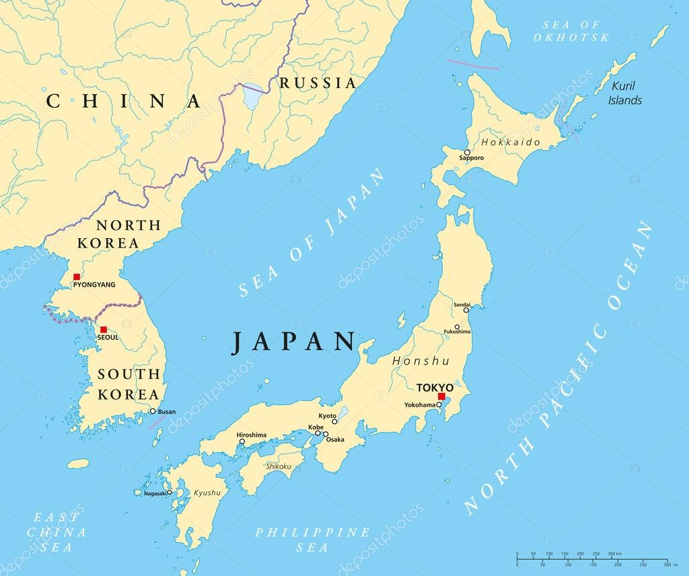
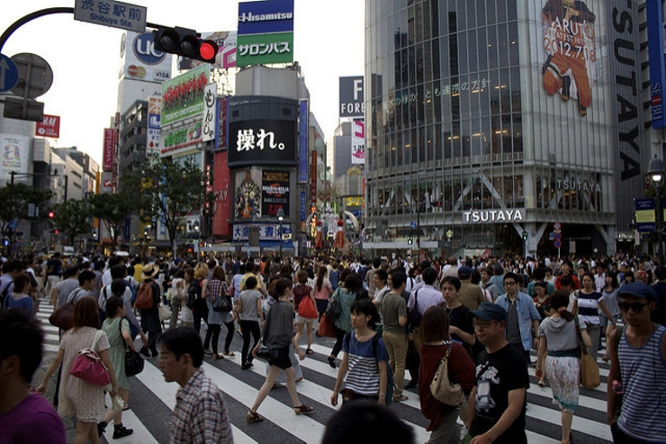

Základné Informácie o Japonsku
Japonsko je ostrovný štát ležiaci na východe Ázie.
Po japonsky sa dá nazvať 2 spôsobmi a to Nihon a Nippon.
Je obklopované Japonským morom zo západu, z juhozápadu Juhočínskym morom z juhu Filipínskym morom zo severu Ochotským morom a z východu Tichým oceánom.
Japonsko sa skladá z viac ako 3000 ostrovou, väčšina z nich je vulkanických, najväčšie z nich sú štyri (Hokkaido, Honshu, Shikoku a Kjushu) a tvoria obrazec Japonského štátu.

Japonsko je z väčšej časti hornatá krajina, najvyšší bod je hora Fuji, ktorá je zároveň symbolom Japonska.
Názov Japonsko znamená "Krajina Vychádzajúceho Slnka"
Japonsko sa nachádza na rozhraní 3 tektonických dosiek a preto sú tu časté malé zemetrasenia, párkrát za storočie vznikajú aj veľké zemetrasenia, ktoré následne vyvolávajú vlny tsunami
Kvôli hornatému prostrediu je podnebie v Japonsku veľmi rôznorodé, juh je subtropický, stred Japonska má mierne podnebné pásmo a sever je chladný.
V lete vzniknú byť veľké zrážky, ktoré neskôr prepuknú do tajfúnov, čo im umožňuje pestovať plodiny aj niekoľko krát do roka.
V zime naopak na severe krajiny padá extrémne množstvo snehu.
Japonsko je počtom obyvateľov 10. najľudnatejšia
krajina na svete s počtom obyvateľov okolo 130 miliónov
Nachádza sa tu najväčšie mesto na svete Tokio ktoré má cez 40 miliónov obyvateľov, ďalšie veľké a známe mestá sú Okinawa, Osaka, Hiroshima, Sendai atď.
Štátne usporiadanie je demokratické, s konštitučnou monarchiou.

Hlavné vierovyznania v Japonsku sú Budhizmus a Šintoizmus (mnohó ľudí praktizuje obidve tieto náboženstvá)
Hlavou štátu je cisár, ktorý má svoje privilégiá avšak za štát rozhoduje parlament.
Japonskou menou je v súčastnosti Japonský Yen (JPY) s momentálnym kurzom 133 JPY = 1 euro.
Momentálne má Japonsko druhú najsilnejšiu ekonomiku na svete, hlavným symbolom japonskej ekonomiky môže byť aj Tokijská burza
Japonské písmo je tvorené troch abecied a tými sú Hiragana, Katakana a Kanji, ktorá je prevzatá z Číny.
Ak vás zaujíma viac o tejto nádhernej krajine tak rozhodne nezabudnite navštíviť aj ďalšie témy kde sa dozviete veľa zaujímavých informácií :)